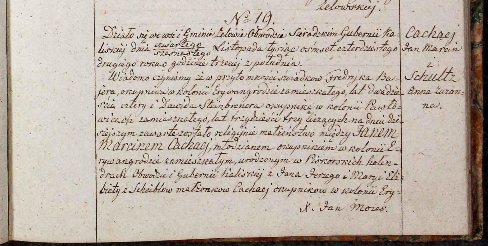

Johann Martin Zachej

Родился в немецкой крестьянской семье примерно в 1822 г. Его малой родиной была деревня Пискоры Калишского воеводства Царства Польского, которое незадолго до этого вошло в состав Российской Империи.
Родители Иоганна Мартина — Иоганн Георг Цахе и Мария Елизавета (урожд. Шайбель) были этническими немцами и изначально жили на территории Королевства Пруссии. В Пискоры супруги пришли ок. 1800 г. Поводом для этого могли стать бурные геополитические процессы, протекавшие в том регионе, из-за чего принадлежность этих территорий постоянно менялась. Так, в начале 1790-х гг. деревня Пискоры ещё входила в состав Речи Посполитой, но к моменту, когда в ней поселилось семейство Цахе, на этих землях, в результате раздела Польско-Литовского государства, немцы уже образовали провинцию Южная Пруссия. В начале XIX в. эту территорию на время занял Наполеон Бонапарт. А когда в 1815 г. тот потерпел окончательное поражение, на этих землях образовалось Царство Польское, которое отошло к Российской Империи. При этом д. Пискоры располагалась всего в 10 км от р. Просна, по которой прошла новая граница с Королевством Пруссии. Так в результате сложных политических преобразований родители Иоганна Мартина впервые стали российскими подданными.
Семья Мартина была большой. У него были как старшие, так и младшие братья и сёстры.
Не позже 1842 г. Иоганн Мартин уже переселился вглубь Польши, в немецкую колонию Эривангрод (ныне Джевоцины). Там он вступил в брак с Анной Сюзанной Шульц, там же у них родилось 11 детей (как минимум трое из них умерли в младенчестве).
Умер Иоганн Мартин в 1905 г. в возрасте 83 лет, пережив жену на два с лишним года. Случилось это в той же колонии Эривангрод, На тот момент, согласно свидетеству о смерти, были живы трое его детей. Среди них точно был сын Вильгельм Эрманн (1850), живший в Лодзи, а также две дочери. Предположительно это были Анна Луиза Бюх (1845) и Юлиана Бушке (1853).